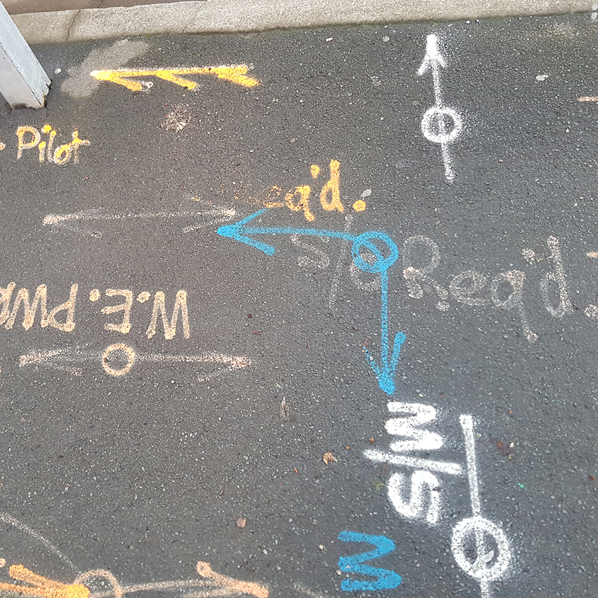

Above our heads and beneath our feet is a network connecting us to the internet at any given moment in time.
Manhole covers, CCTV cameras, antennae, and markings on the street
are just some of the physical ways we can see the internet around us.
At the moment around the Mt Cook and Newtown areas under ground work is being done, likely to be installing Fibre internet cables. Bright markings left on the footpaths are signs of the web of infrastructure beneath our feet, and the people who put them there. These markings instruct and inform, but to the untrained eye their meaning is a mystery. BBC News released an article that covered the meaning of these mysterious scribbles.